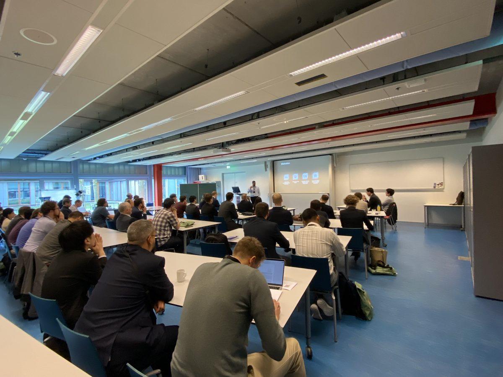
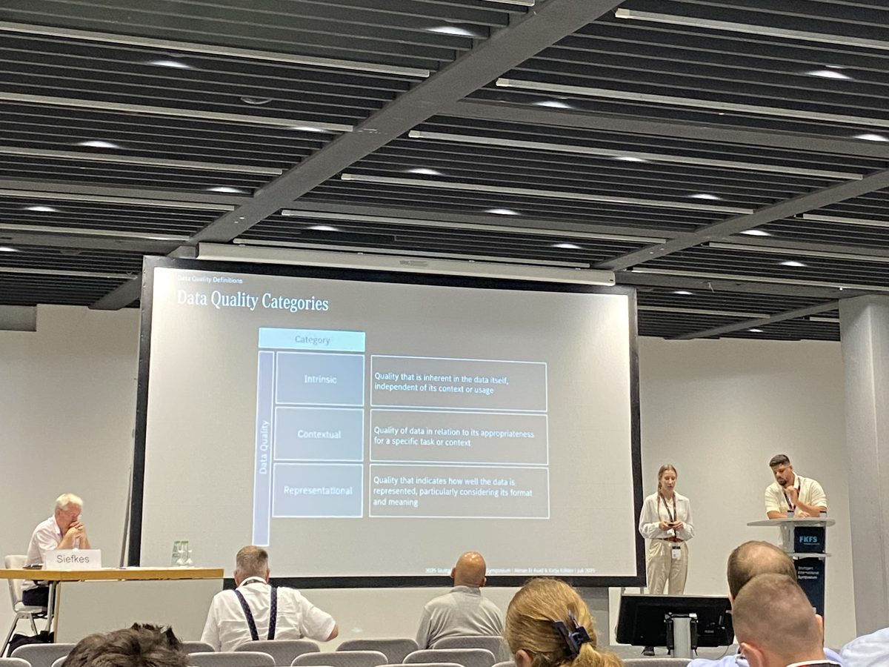
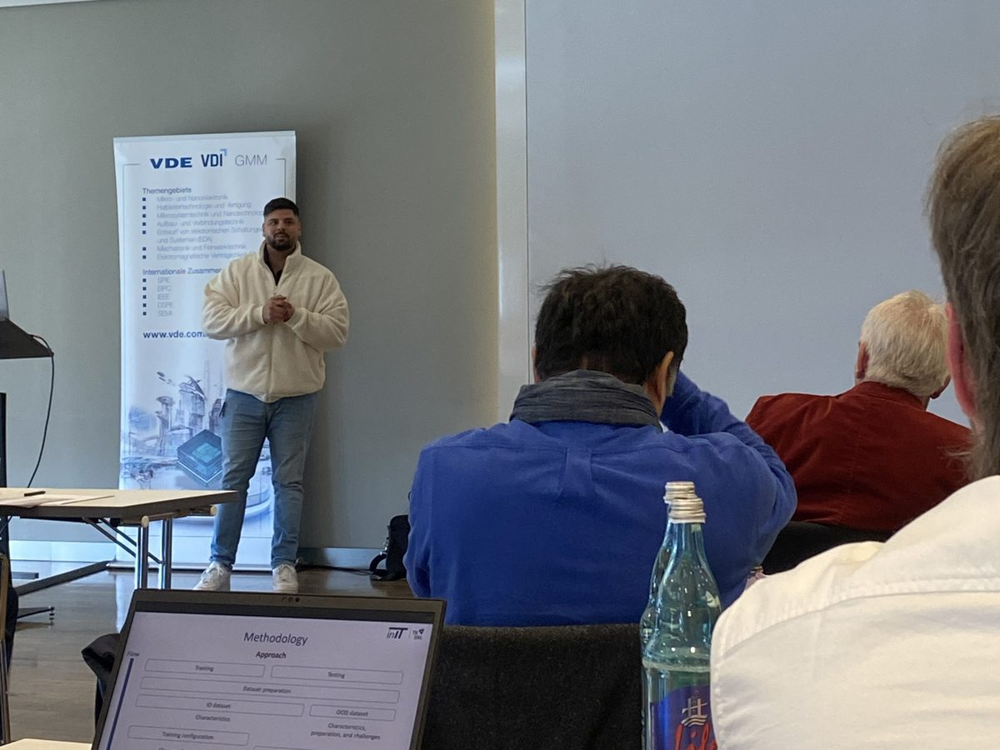
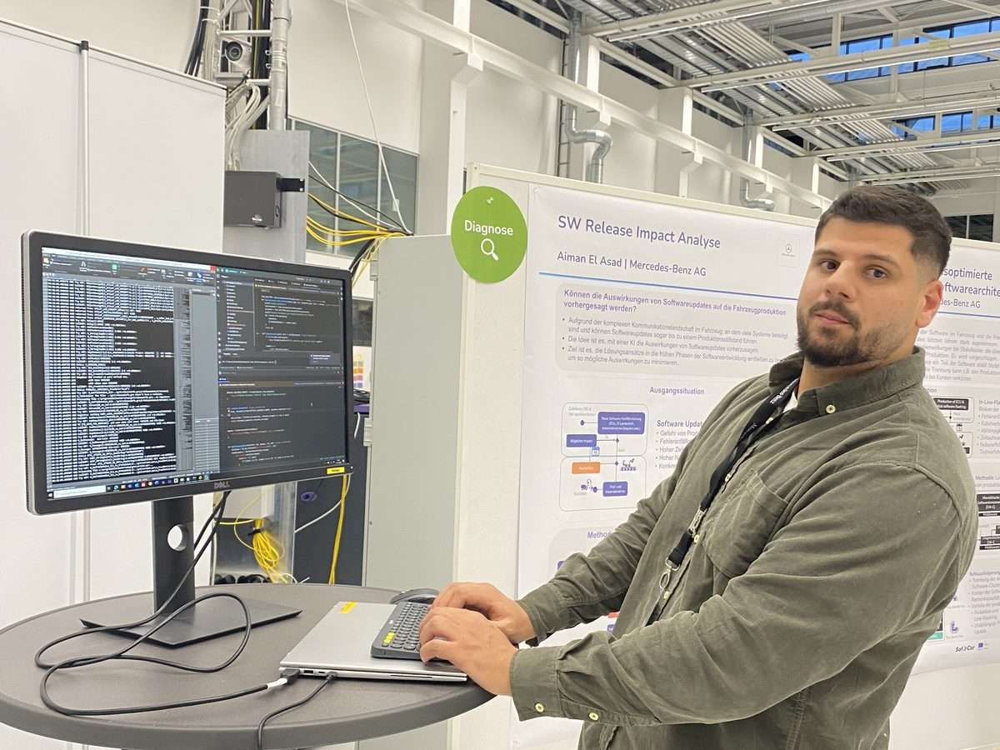

Researcher. Doctoral research and peer-reviewed publications on AI in automotive production.
Engineer. Builds data pipelines, CUDA kernels and LLM systems.
Heterodox thinker. Likes to question assumptions, including his own.
About me
I’m Aiman. I studied physics at RWTH Aachen and later moved into software engineering and AI.
During my doctoral research at Mercedes-Benz AG and the University of Stuttgart, I worked on the
question of how software updates affect automotive production.
Curiosity
What I enjoy most is understanding technical problems from the ground up. I tend to ask a lot of
questions and I rarely like treating a system as a black box. That is probably one reason why my
interests range from machine learning and LLMs to CUDA, computer architecture and physics.
I have always liked asking basic questions, even when the answer seems obvious. Roger Penrose once
described this attitude in a way that stayed with me:
“Children are not afraid to pose basic questions that may embarrass us, as adults, to ask.”
A book that had a similar influence on me was Jon Stokes’ Inside the Machine.
Understanding what processors actually do changed the way I think about software performance, and
that interest eventually led me to CUDA and GPU programming.
Data
A large part of my work is about data. I like taking messy real-world data, understanding where it
comes from, structuring it and then figuring out whether machine learning actually adds value.
Presenting
I also enjoy presenting and discussing research. Some of the most useful moments in my work have come
from someone asking a simple question that forced me to rethink an assumption.

CIRP Conference on Manufacturing Systems 2025, University of Twente — our LLM-based impact analysis for software updates.

Stuttgart International Symposium 2025 — our SAE paper on data management in automotive commissioning.

Automotive meets Electronics & Control 2026, Dortmund — semantic clustering of production error messages.

SofDCar project presentation — poster session on the software release impact analysis.
Outside work
Outside work, I spend a lot of time on my motorcycle. I also enjoy photography, cooking,
plants and reading.
I also like classic cars. This is a Mercedes-Benz 280 SE 3.5 I came across at the
IAA 2025 in Munich. Considering that most of my research deals with automotive software, there is
something appealing about cars from a time when none of that existed.
IAA 2025, Munich — Mercedes-Benz 280 SE 3.5.
People
The people around me have shaped how I think and who I am, more than any book or course. The first
picture is from the day of my doctoral examination, with the person who was my supervisor, mentor and
friend throughout. The second is the team that made those years what they were, at a minigolf
afternoon we took slightly too seriously.
The day of my doctoral examination, July 2026 — with my supervisor, mentor and friend.Team event — minigolf with the colleagues who accompanied me on the way.
CV
A summary of my CV. A full version is available on request via the contact page.
Work experience
Doctoral Researcher & Research Scientist, Industrial AI and Automotive SoftwareMercedes-Benz AG, Sindelfingen, Germany
Developed AI-based methods for assessing the production impact of automotive software updates
Designed data pipelines and evaluation methods for release documentation, commissioning data and production-quality indicators
Built LLM-based retrieval and agent systems
Applied research within the SofDCar project, in cooperation with the University of Stuttgart and industrial partners
Theoretical particle physics with a focus on quantum field theory; concurrent studies in mathematics
Thesis: The Energy-Momentum Tensor in the Gradient Flow Formalism for Scalar QCD
B.Sc. PhysicsRWTH Aachen University, Germany
Focus on mathematical physics
Thesis: Analytical calculation of fringe fields of electrostatic deflection elements (Analytische Berechnung von Randfeldern elektrostatischer Ablenkelemente)
Showed analytically that the fringe fields of the electrostatic deflectors in an EDM storage ring are negligible for the proton beam
Teaching
Physics and Mathematics Teacher (fixed-term)Christian-Rohlfs-Gymnasium, Hagen, Germany
Independently planned and delivered eleven lessons per week (physics, plus mathematics support classes)
Tutor in Theoretical PhysicsRWTH Aachen University, Germany
Taught bachelor’s and master’s students
Led a semester-long tutorial in theoretical mechanics
Industrial AI, large language models, retrieval-augmented generation, agentic systems, explainable AI, NLP, clustering, data engineering
Automotive
Software updates, production quality, testing and commissioning, root-cause analysis, software traceability, release impact analysis, production data analytics
Certificates
ISTQB® Certified Tester · aqua ALM · English for Academic Purposes I (C1), University of Stuttgart
Languages
German (native), Arabic (native), English (C1)
Publications
Peer-reviewed publications, manuscripts under review and conference contributions. Where available, titles link to the publisher’s page (DOI).
An Industrial AI Framework for Automotive Software Traceability
S. Aghaei*, A. El Asad*, E. Daub, F. Ansari (*shared first authorship)Journal manuscript under review, 2026
Conference contributions
An LLM-Based Approach for Semantic Clustering of Vehicle Production Error Messages
A. El Asad, M. Hahn, H.-C. Reuss, E. DaubPoster, Automotive meets Electronics & Control (AmEC) 2026, VDE/VDI-GMM, Dortmund
Roofline-driven CUDA kernel optimisation. Four workloads — 2D stencil, reduction, softmax and
SGEMM — are tuned in documented steps, each measured against the hardware ceiling it is
bound by (SGEMM reaches 97% of cuBLAS on an RTX A2000 Laptop GPU). Hypotheses that turned out wrong are kept in the code and labelled as such.
What is your PyTorch model actually bound by? A per-operator roofline profiler: it runs a model once,
intercepts every operator, records time, FLOPs and bytes moved, and places each op on the measured
roofline of your device. Reports memory- vs compute-bound ops, fusion candidates and whether lower
precision, torch.compile or bigger batches are the right lever. CUDA, Apple MPS and CPU.
LLM post-training for machine translation, end to end on one laptop GPU: baseline, data curation,
LoRA SFT, COMET-ranked preference pairs, DPO and a significance-gated release (paired bootstrap on
the full WMT22 de→en test set). +3.1 BLEU and +1.3 COMET over zero-shot. The stages that did not improve anything are documented as well.
A garden fountain as a real fluid simulation: 2D Smoothed Particle Hydrodynamics in C++17/OpenMP,
with the water pumped from the basin back through the nozzle in a closed loop. Validated against the analytic hydrostatic solution, which caught a factor-2 error in the pressure-gradient form that many demos copy. No dependencies: one header of physics, one main.cpp.
Controller for data processing on this website is the person named in the imprint above.
Hosting. This website is hosted by GitHub, Inc., 88 Colin P. Kelly Jr. Street, San Francisco,
CA 94107, USA (“GitHub Pages”). When you visit the site, GitHub’s servers
automatically process technical data that your browser transmits (IP address, date and time of the
request, requested URL, browser type and version, operating system, referrer) in server log files.
This processing is necessary to deliver the website securely and is based on Art. 6 (1)(f) GDPR
(legitimate interest in a secure and efficient provision of the site). GitHub is certified under the
EU-US Data Privacy Framework. Details: GitHub Privacy Statement (opens in a new tab).
No tracking. This website does not use cookies, analytics, tracking pixels, embedded social
media or content from third-party servers. The web font is served from this site itself.
Contact by e-mail. If you write to me, I process the data you provide (e-mail address,
content of the message) solely to answer your request (Art. 6 (1)(b) and (f) GDPR). Messages are
deleted once the matter is settled, unless legal retention periods apply.
Your rights. Under the GDPR you have the right to access, rectification, erasure, restriction of
processing, data portability and objection (Art. 15–21 GDPR), and the right to lodge a
complaint with a supervisory authority (Art. 77 GDPR).